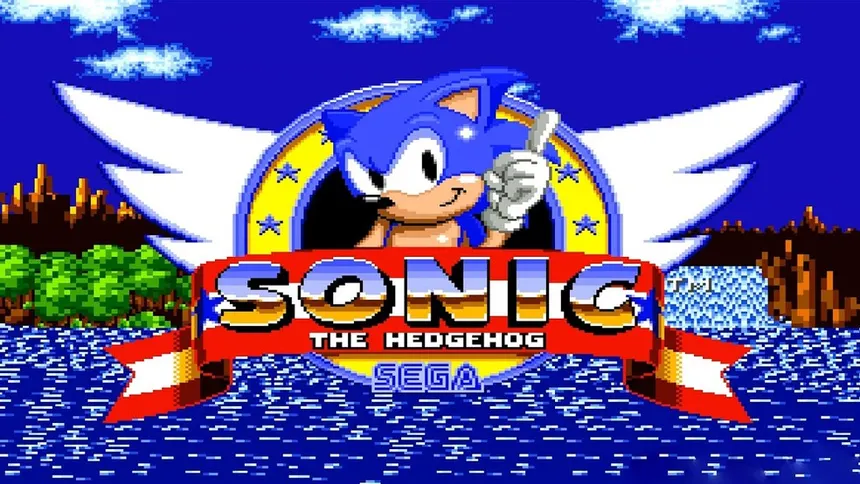
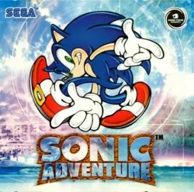
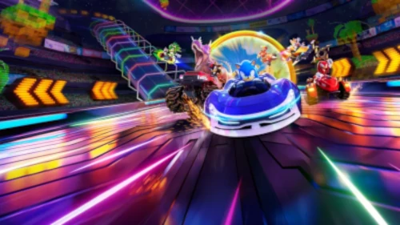

Fase 2D
A fase 2D dos jogos do Sonic começou em 1991 com Sonic the Hedgehog, no Mega Drive. Essa época foi marcada por fases com alta velocidade, plataformas, trilhas sonoras marcantes e gráficos coloridos. Jogos como Sonic 2, Sonic 3 e Sonic & Knuckles aperfeiçoaram a fórmula e são considerados alguns dos melhores da franquia, consolidando o Sonic como um dos maiores ícones dos videogames.

Sonic The Hedgehog (1991) - Mega Drive
Fase 3D
A fase 3D dos jogos do Sonic começou em 1998, com Sonic Adventure, no Dreamcast. Essa nova etapa trouxe gráficos tridimensionais, histórias mais elaboradas e novas formas de jogabilidade. Ao longo dos anos, a franquia passou por momentos de grande sucesso e também por críticas, mas continuou evoluindo com títulos como Sonic Generations, Sonic Colors e Sonic Frontiers, que buscaram inovar e modernizar a experiência da série.

Sonic Adventure (1998) - Dreamcast
Spin-offs
Além dos jogos principais de plataforma, o Sonic também estrelou diversos spin-offs em gêneros diferentes. A franquia recebeu jogos de corrida, como Sonic & All-Stars Racing e Team Sonic Racing, além de títulos de festa, esportes, pinball e até jogos de tabuleiro digitais. Esses jogos exploram os personagens do universo Sonic em experiências variadas, oferecendo diversão para públicos diferentes e expandindo a franquia para além das aventuras tradicionais.

Sonic Racing: CrossWorlds (2025) - PS5/PS4
Linha do Tempo dos jogos de Sonic
- 1991 – Sonic the Hedgehog: estreia do personagem no Mega Drive.
- 1992 – Sonic the Hedgehog 2: introdução de Tails.
- 1993 – Sonic CD e Sonic Spinball: estreia de Amy Rose e Metal Sonic; primeiro spin-off de pinball.
- 1994 – Sonic the Hedgehog 3 e Sonic & Knuckles: introdução de Knuckles e conclusão da trilogia clássica.
- 1998 – Sonic Adventure: início da era 3D no Dreamcast.
- 2001 – Sonic Adventure 2: estreia de Shadow the Hedgehog.
- 2003 – Sonic Heroes: foco em equipes de personagens.
- 2006 – Sonic the Hedgehog (2006): tentativa de reiniciar a franquia em HD.
- 2008 – Sonic Unleashed: mistura fases 2D e 3D com o Werehog.
- 2010 – Sonic Colors: retorno ao estilo rápido e bem recebido.
- 2011 – Sonic Generations: celebração de 20 anos reunindo Sonic clássico e moderno.
- 2017 – Sonic Mania: retorno ao estilo clássico em 2D.
- 2019 – Team Sonic Racing: jogo de corrida focado em trabalho em equipe.
- 2022 – Sonic Frontiers: primeiro grande jogo de mundo aberto da franquia.
- 2023 – Sonic Superstars: novo jogo 2D com gráficos em 3D e multiplayer.
Trailer de comemoração de 35° aniversário da franquia
Consoles
No final dos anos 1990, a Sega enfrentou dificuldades financeiras devido ao baixo desempenho de alguns consoles, como o Sega Saturn, e à forte concorrência da Sony e da Nintendo. Embora o Dreamcast tenha sido bem recebido, suas vendas não foram suficientes para recuperar a empresa. Em 2001, a Sega encerrou a produção de consoles e passou a atuar apenas como desenvolvedora e publicadora de jogos.
Atualmente, os jogos do Sonic podem ser encontrados em diversas plataformas, como PlayStation, Xbox, Nintendo Switch, PC (Steam e Epic Games Store) e dispositivos Android e iOS. Isso permitiu que a franquia alcançasse um público muito maior, deixando de ser exclusiva dos consoles da Sega.